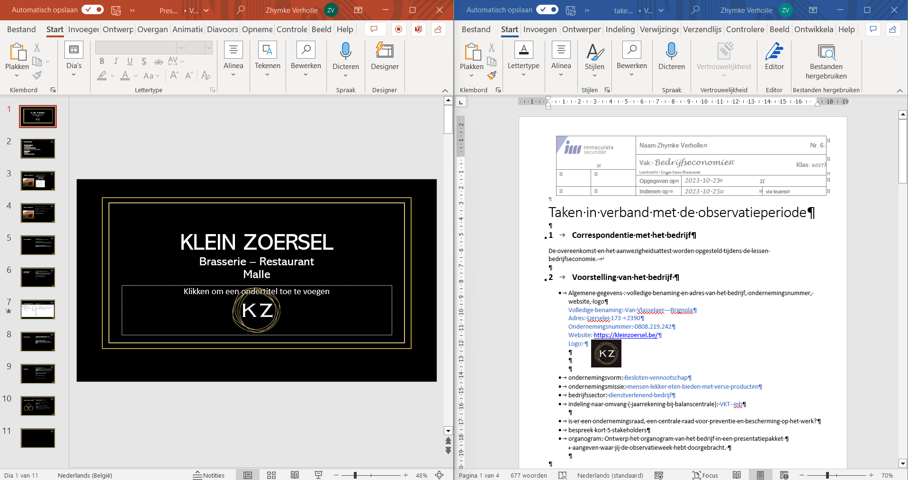

Donderdag 18/01
Mijn vierde observatie dag begon om 11:00. Toen ik aan kwam werd er aan mij gevraagd om mee de tafels in te dekken omdat de poetsvrouw gisteren was geweest. Na een uur was deze taak afgerond. Daarna begon ik terug met de taak van de cadeaubonnen het was nog al een werkje maar ik heb het vandaag afgewerkt. Samen met mijn mentor heb ik de economie vragen i.v.m. de observatieweek overlopen en gecorrigeerd. Toen had ik aan mijn mentor gevraagd hoe de dagomzet verwerkt word en dat gaat hij mij morgen uitleggen. Door het overlopen van de vragen kon ik beginnen met mijn PowerPoint te maken. Ik heb de opmaak en al de hyperlinks al gemaakt. De PowerPoint ga ik nog verder uitwerken aan het einde toe. Toen was het 17:00 en hadden de koks een maaltijd voor alle werknemers klaar gemaakt. Ik vind het leuk om te zien dat door de maaltijd de samenhorigheid en de sfeer in de groep word versterkt. Om daarna terug aan het werk te gaan als een team. Om 19:00 zat mijn dag erop en mocht ik naar huis gaan.
Mijn dag in één woord is:
Schakkelen
Schakkelen omdat er ik veel verschillende opdrachten heb gedaan vandaag.
